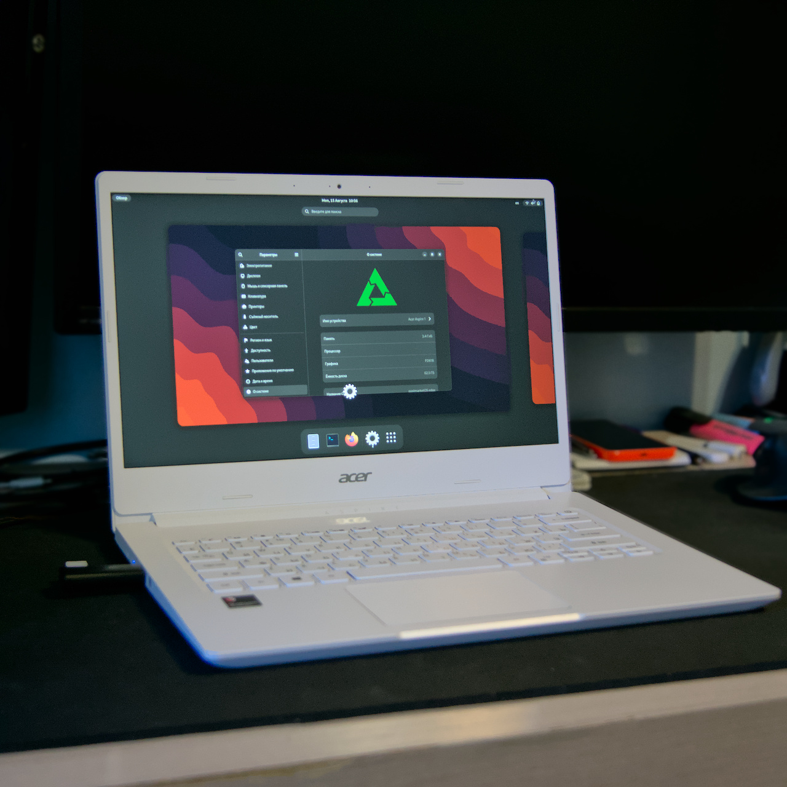

Acer Aspire 1 (A114-61)
|
|
This device is Work-In-Progress and is not yet available in postmarketOS. Contact travmurav via matrix if you have questions. |
|

Aspire 1 running GNOME |
|
| Manufacturer | Acer |
|---|---|
| Name | Aspire 1 |
| Codename | aspire1 |
| Released | 2021 |
| Category | testing |
| Original software | Windows 10 |
| postmarketOS kernel | mainline |
| Hardware | |
| Chipset | Qualcomm Snapdragon 7c Gen1 SC7180 |
| CPU | 2x Kryo 468 Gold + 6x Kryo 468 Silver |
| GPU | Adreno 618 |
| Display | 1920x1080 IPS |
| Storage | 64GB |
| Memory | 4GB |
| Architecture | aarch64 |
| Non-Android based device | ✔ |
| Unixbench Whet/Dhry score | 5668.0 |
{kind=link}
| USB Networking |
Unavailable
|
|---|---|
| Flashing |
Unavailable
|
| Touchscreen |
Unavailable
|
| Display |
Works
|
| WiFi |
Works
|
| FDE |
Works
|
| Mainline |
Works
|
| Battery |
Works
|
| 3D Acceleration |
Works
|
| Audio |
Partial
|
| Bluetooth |
Works
|
| Camera |
Works
|
| GPS |
Unavailable
|
| Mobile data |
Unavailable
|
| SMS |
Unavailable
|
| Calls |
Unavailable
|
| USB OTG |
Works
|
| NFC |
Unavailable
|
| Accelerometer |
Unavailable
|
|---|---|
| Magnetometer |
Unavailable
|
| Ambient Light |
Unavailable
|
| Proximity |
Unavailable
|
| Hall Effect |
|
| Barometer |
Unavailable
|
| Power Sensor |
|
| Keyboard |
Works
|
|---|---|
| Touchpad |
Works
|
| USB-A |
Works
|
| HDMI/DP |
Partial
|
| Ir TX |
Unavailable
|
| TrustZone |
|
| FOSS bootloader |
|
Acer Aspire 1 is a low-end Windows on ARM laptop, based on Snapdragon 7c Gen1, a platform that has great mainline Linux support due to some Chromebooks sharing the same platform.
Variant differences
While the most common version of the device seems to be the "WiFi" variant, an "LTE" version with 8GB ram seem to also exist.
Contributors
- travmurav
Users owning this device
- TravMurav ( Notes: wifi, A114-61-S45P, daily use)
Installation
Disabling UEFI Secure-Boot
This device uses the standard UEFI secure-boot. The initial configuration seem to contain the keys for some Linux distributors (i.e. Canonical or Debian) but for now it's probably easiest to just disable it.
Note that the following actions may cause Windows to fail decryption if the Bitlocker was enabled.
- Power on the device and press F2 to enter UEFI setup.
- Go to the Security tab and set the maintenance password. Write it down.
- Go to the Boot tab and disable the Secure Boot. This option is only available if the password is set.
- Go back to the Security tab and remove the password by changing it to the empty string.
Installing pmOS on an external storage
You should be able to perform sdcard installation with some usb-stick as the target. Note that the laptop has no SD slot.
Highly consider making a backup of the internal storage, it seems like the recovery media is not available for this laptop.
Installing pmOS on the internal eMMC
|
|
WARNING: The bootloader chain of the device is located in the same eMMC as the OS, damaging internal partition layout may make the laptop into an unrecoverable brick. |
TBD
Known Issues
- BT controller seem to crash sometimes, fixed by re-probing the related kernel modules.
- The external display seem to cause issues in many cases, related to the GPU.